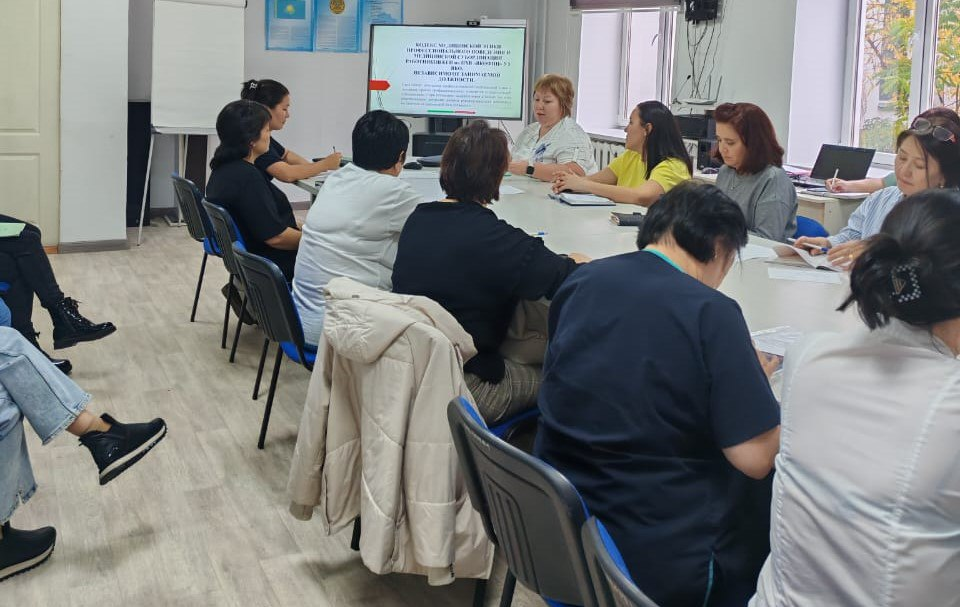
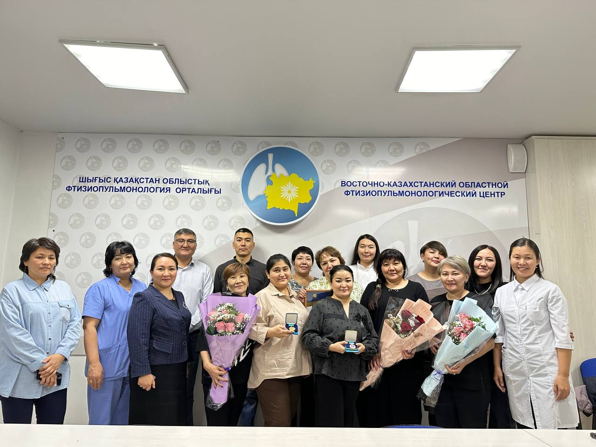
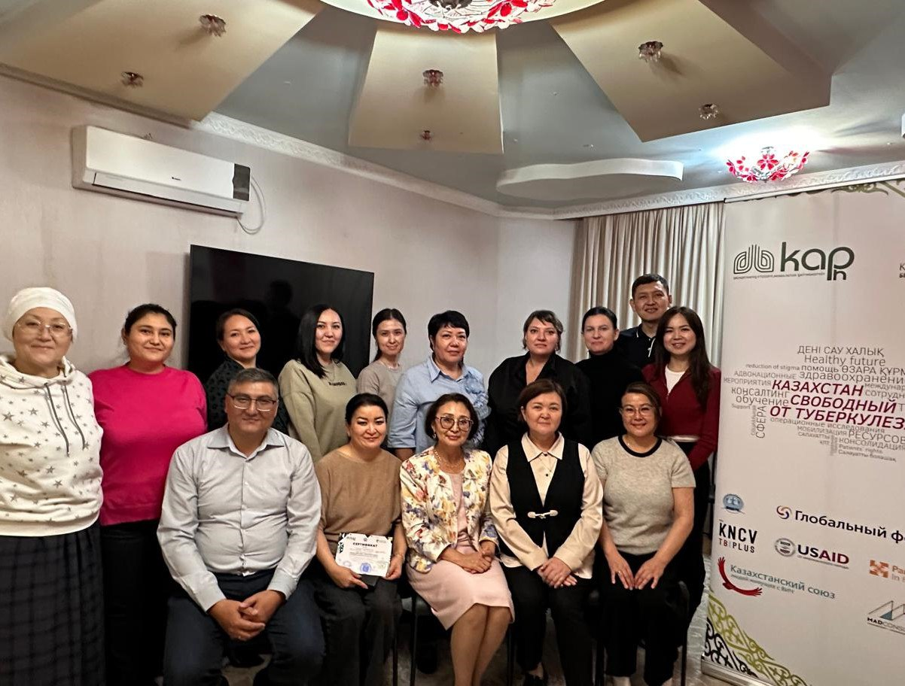
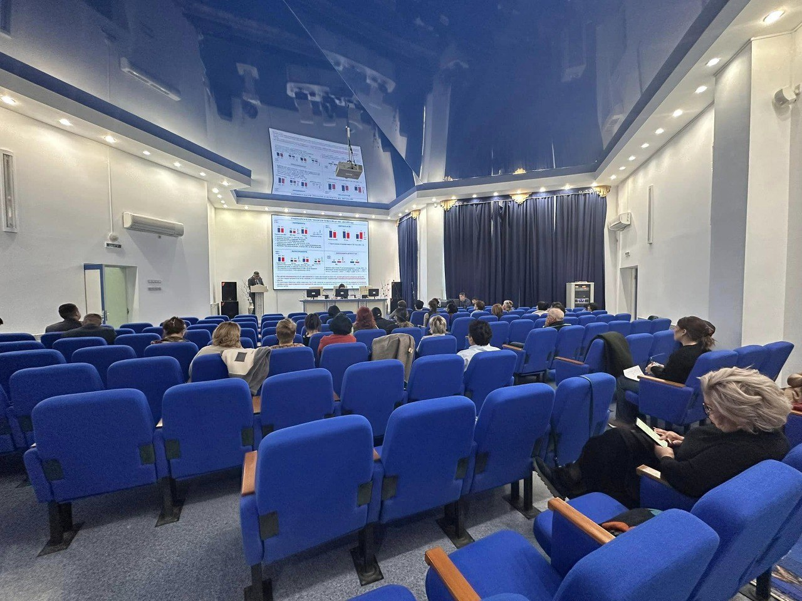
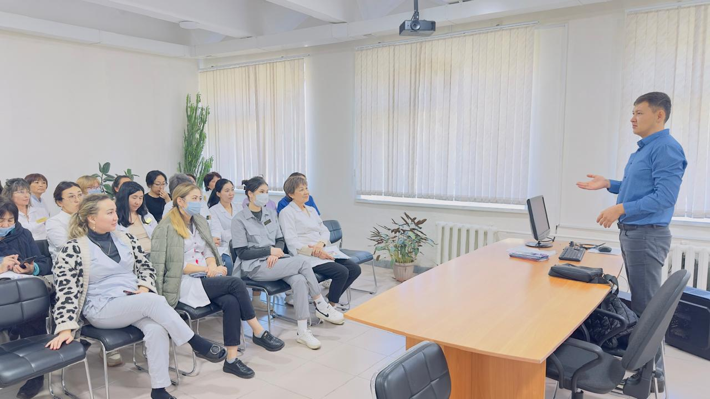

НОВОСТИ

Комплаенс-офицер фтизиопульмонологического центра Ольга Стародубцева провела семинар на тему: «Кодекс медицинской этики профессионального поведения и медицинской субординации работников ВК ОФПЦ, независимо от занимаемой должности».
28.10.2024

В канун одного из самых торжественных праздников страны - Дня Республики сотрудники нашего центра были отмечены ведомственными наградами.
24.10.2024

Ресурсы для успеха: эффективная работа в условиях развития Партнерства Стоп ТБ
18.10.2024

Итоги противотуберкулезных мероприятий за девять месяцев 2024 года обсуждены на заседании Координационного совета Управления здравоохранения Восточно-Казахстанской области.
08.10.2024

Руководитель ситуационного центра ВК ОФПЦ Омирали Рамазанов в рамках мониторингового визита нашей группы МиО по г. Усть-Каменогорск провел очередное обучение коллег областного центра – Левобережная клиника, Моя семейная амбулатория, ГП №1, ГП №2, Денсаулык, Ем Алу плюс, Амбулаторный центр.
08.10.2024
Ваш браузер не поддерживает тег video.
Об ускоренном методе выявления туберкулеза GeneХpert рассказывает областной координатор лабораторной службы группы МиО, врач бактериолог Ляззат Бигалиева
4.10.2024
Сегодня мы бы хотели поделиться словами благодарности от нашей пациентки, которая прошла сложный путь к полному выздоровлению и выражает благодарность всему персоналу центра фтизиопульмонологии за их бесконечное терпение, поддержку и профессионализм.
03.10.2024
↑